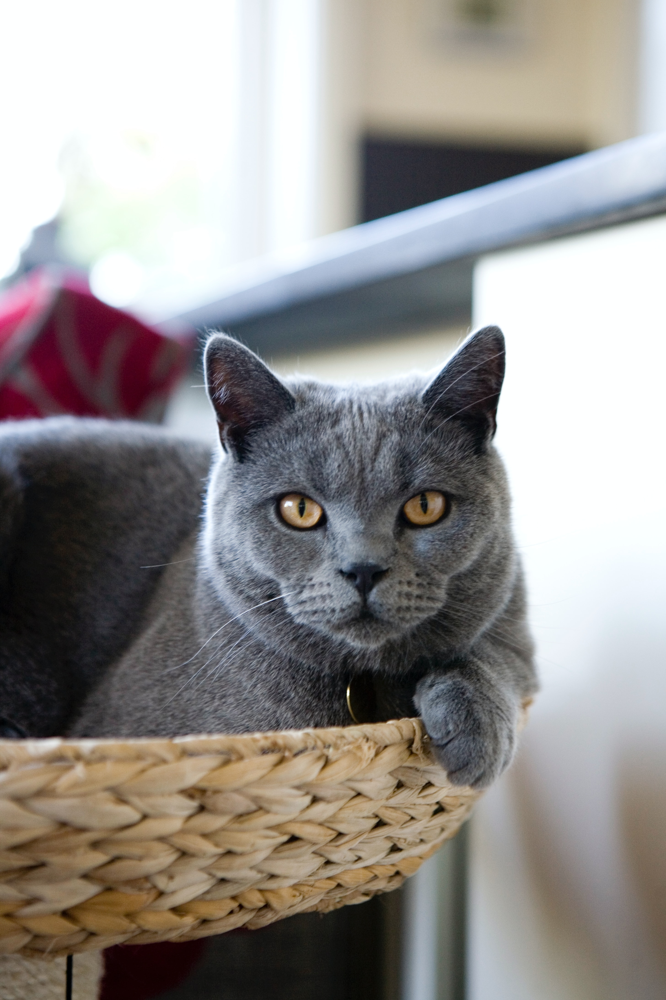

|
Gato Siamés El gato siamés es una raza de gato alargado y elegante. Tiene cuerpo, cuello, patas y cola alargados. Esta raza es de tamaño medio, aunque con músculos proporcionados. Su cabeza es un triángulo alargado y sus ojos son almendrados y siempre son de un tono azul intenso. Además, cuenta con un pelo corto, abundante y sedoso Dato curioso: El cuerpo del gato siamés es más oscuro en las zonas donde la temperatura corporal es menor, es decir, en patas, cola, cara y orejas. Esta característica se debe a un gen térmico que hace que los pigmentos se fijen en puntos más fríos. El resto de su anatomía tiene una coloración clara . |
|  |
Gato Inglés El gato inglés o British Shorthair es una raza de gato que se caracteriza por tener una cabeza redonda, pelo afelpado y una constitución física bastante compacta y robusta. Muchos dicen que parece un oso de peluche; un aspecto que también podemos apreciar en su carácter tan cariñoso y entrañable Dato curioso: El abanico de colores en la raza de gatos British es muy amplio, desde el negro, azul, rojo, crema, chocolate, lila, tortugas hasta los últimos reconocidos, el cinnamon y fawn |

|
Maine Coon El Maine Coon es un gato de pelo largo o mediano. El pelaje es suave y sedoso, aunque la textura puede variar según el color del pelaje. Los machos son más grandes que las hembras. Tiene el cuerpo alargado y rectangular y una cola también larga. Por estos motivos, puede parecer mucho más grande de lo que es. Es un gato de huesos robustos y musculoso Dato curioso: Los Maine Coons son una raza de gatos muy interesante. Son conocidos como los “perros del mundo de los gatos” porque son generalmente bondadosos y aman a las personas |